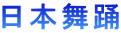

◎ 入会金 2.000円
月謝 5.000円 （月3回）
資格を取ることもできます。 （別途）
入会金・月謝のページへようこそ

◎入会金 2.000円
月謝 5.000円 （月3回）
資格を取ることもできます。
（別途）
◎
入会金 2.000円
月謝 5.000円 （月3回）
 初心者用 三味線あります。
初心者用 三味線あります。
資格を取ることもできます。
（別途）
◎
入会金 2.000円
・
自装（前結び）コース 月謝 5.000円 （月3回）
（資格を取ることもできます/別途）
◎
入会金 5,250円
・他装きつけコース いろいろなコースがあります。
・舞踊きつけコース 10.500円×10回（初級）・・・
受験料 10.500円、認定料 210.000円
10.500円×10回（中級）・・・・
受験料 10.500円、認定料 315.000円
・花嫁きつけコース 13,650円×12回
・・・・・・・・・
受験料 10.500円、認定料210.000円
その他、ご要望に、柔軟に対応できます。